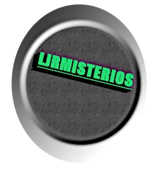
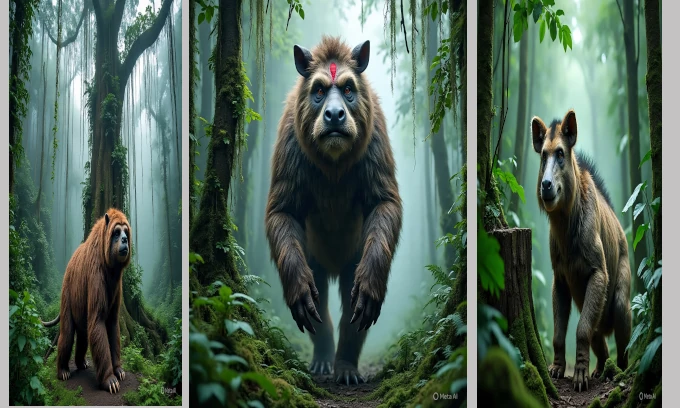
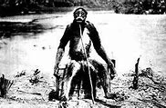
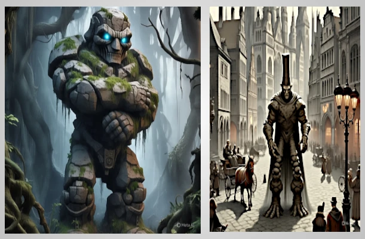
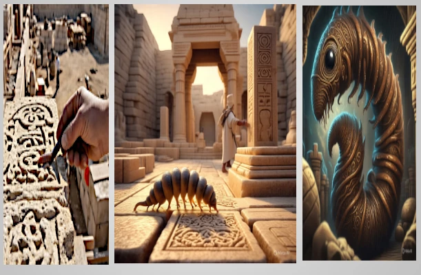

Esse é o site que mostra dados interessantes!
LJR misterios e ciencias

LJR mistérios e ciências
O site que te mostra conhecimentos, informações e notícias interessantes!
QUEM SOU EU

Locais misteriosos no mundo

Mundos perdidos
Foto real de cobra gigante no Congo!

O mapinguari

O simio de Loys

O golem

Skunk ape
O pé grande

O shamir

Slide rock-bolter( A baleia terrestre)
mais conhecimentos fantasticos
Eu também faço desing e arte vetor!